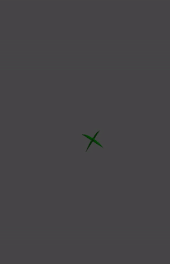
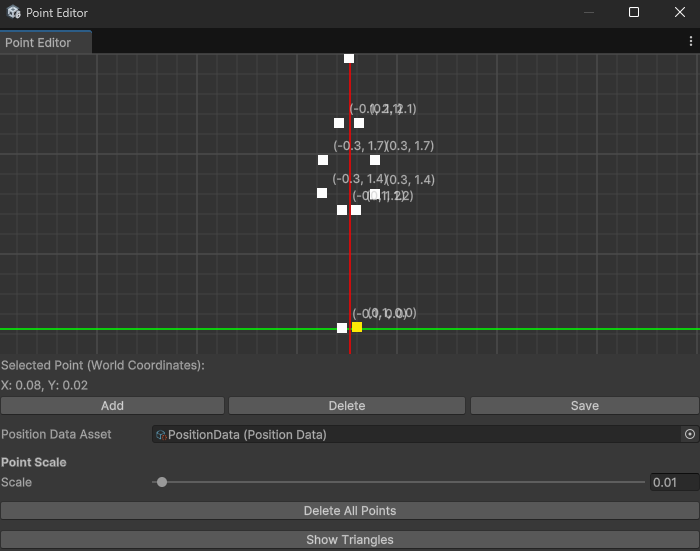
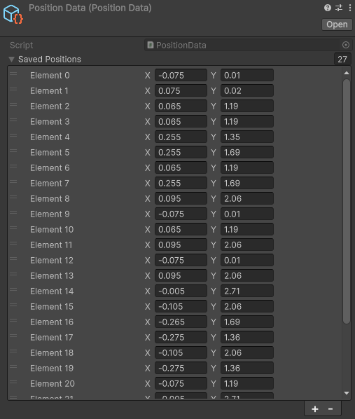

Scenari Foliage
GPU powered plants!
We maek plaent on GPU!
*thumbs up*
With much confidence gained from using geometry shaders to build shadows, I thought I'd kick it up to
eleven and try to tackle foliage, in 72 hours.
The Plan.
I thought that my new-found geometry shader powers could be a good addition to the GPU Instancing
technique I've used before.
To recap, GPU Instancing, is a performance optimization method used to render many instances of a mesh
in a single draw call. Where, instead of issuing N seperate draw calls for each instance, we issue 1
draw call with N instances in a batch.
This allows the GPU to do all the heavy lifting and the CPU to only provide the initial information for
instance data.
For grass, it is pretty simple to construct the profile of each grass blade.
for (int side = 0; side < 2; ++side)
{
float3 axis = (side == 0) ? right : forward;
for (int i = 0; i < SEGMENTS; ++i)
{
float t0 = (float)i / SEGMENTS;
float t1 = (float)(i + 1) / SEGMENTS;
float windAmount0 = t0 * t0;
float windAmount1 = t1 * t1;
float factor0 = (SEGMENTS - (float)i) / SEGMENTS;
float factor1 = (SEGMENTS - (float)(i + 1)) / SEGMENTS;
float3 bottomLeft = center - axis * halfWidth * pow(factor0, 0.5) + up * (t0 * height) + windVec * windAmount0;
float3 bottomRight = center + axis * halfWidth * pow(factor0, 0.5) + up * (t0 * height) + windVec * windAmount0;
float3 topRight = center + axis * halfWidth * pow(factor1, 0.5) + up * (t1 * height) + windVec * windAmount1;
float3 topLeft = center - axis * halfWidth * pow(factor1, 0.5) + up * (t1 * height) + windVec * windAmount1;
o.pos = UnityWorldToClipPos(bottomRight); o.uv = float2(1, t0); o.id = 1; triStream.Append(o);
o.pos = UnityWorldToClipPos(bottomLeft); o.uv = float2(0, t0); o.id = 1; triStream.Append(o);
o.pos = UnityWorldToClipPos(topRight); o.uv = float2(1, t1); o.id = 1; triStream.Append(o);
o.pos = UnityWorldToClipPos(topLeft); o.uv = float2(0, t1); o.id = 1; triStream.Append(o);
o.pos = UnityWorldToClipPos(topRight); o.uv = float2(1, t1); o.id = 1; triStream.Append(o);
o.pos = UnityWorldToClipPos(bottomLeft); o.uv = float2(0, t0); o.id = 1; triStream.Append(o);
triStream.RestartStrip();
}
}
This gives 2 blades, perpendicular to each other which gives a more full and 3 dimensional look, resulting in fuller foliage coverage.
With the blades being rendered, I also wanted to perform an comparative analysis of the GPU methods. The results are overwhelmingly indicative of the capability of offloading workloads to the GPU, with the Indirect method being under 2 times the speed of individual instances with 1000 times more blades.
| Method | Instance Count | FPS | ms |
|---|---|---|---|
| Seperate Instances | 100 | 280 - 295 | 3.57 - 3.38 |
| Instanced | 10000 | 380 - 420 | 2.65 - 2.38 |
| InstancedIndirect | 100000 | 420 - 440 | 2.38 - 2.27 |
With the blades working and a very clear choice of execution method, I moved on to the main focus of
this system.
drawing foliage shapes.
Shape Points Editor
The Points Editor interface allows the user to draw a shape out of points to be the profile of the foliage.
 
The editor can also control the scale of the resultant output shape data output.
This data is piped into a scriptable object which is then supplied at runtime to the shader which then draws the foliage shapes.

The next step for this system is allowing the user to paint on terrain or any collidable objects to be able to add foliage or any other props that need to be populated in the world.
Another step would be the introduction of foliage layers, which would allow for multiple types of foliages to be rendered simultaneously.
I will be working on these additions in my free time or in-between other projects as a sort of breather, but I will definitely continue working on this system, because let's be honest anything to do with GPU programming and shaders is awesome.
I will also put up a demo of this system as soon as possible, but until then please enjoy this calming foliage under the wind.

Cheers!